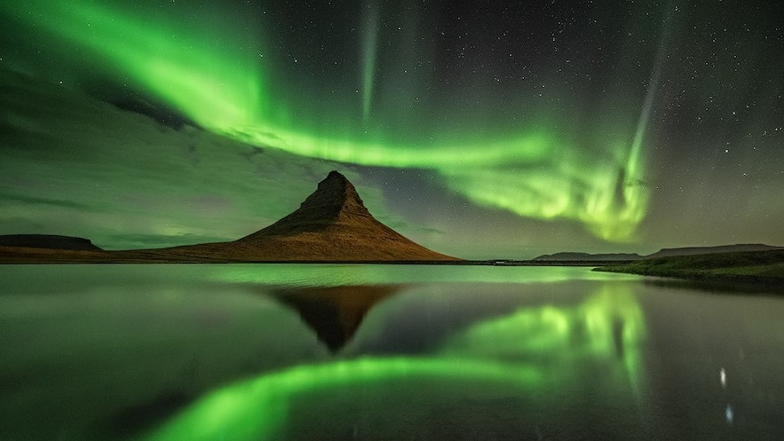

Approximately 60 kilometers east of Skaftafell, titanic icebergs float peacefully on Jökulsárlón, an enchanting azure blue glacier lagoon, where seals swim around countless mountains of ice that regularly break off the Breiðamerkurjökull glacier ice cap.
Forged by a relentless duel of fire and ice, the Skaftafell National Reserve in southeast Iceland embodies fantastically unusual landscapes that are unmatched anywhere in the world.
Offering both spectacular sights and a glimpse into Iceland's history and culture, the Golden Circle is by far the most popular tourist route in Iceland.
The Snæfellsnes peninsula in west Iceland is often referred to as “Iceland in miniature” because of the great variety of geological marvels it contains—in fact, a day tour of the peninsula will allow you to see and experience many of Iceland's most sought-after natural wonders.
The Westman Islands, “The Pearls in The Ocean”, is an archipelago of 15 islands and about 20 cliffs.